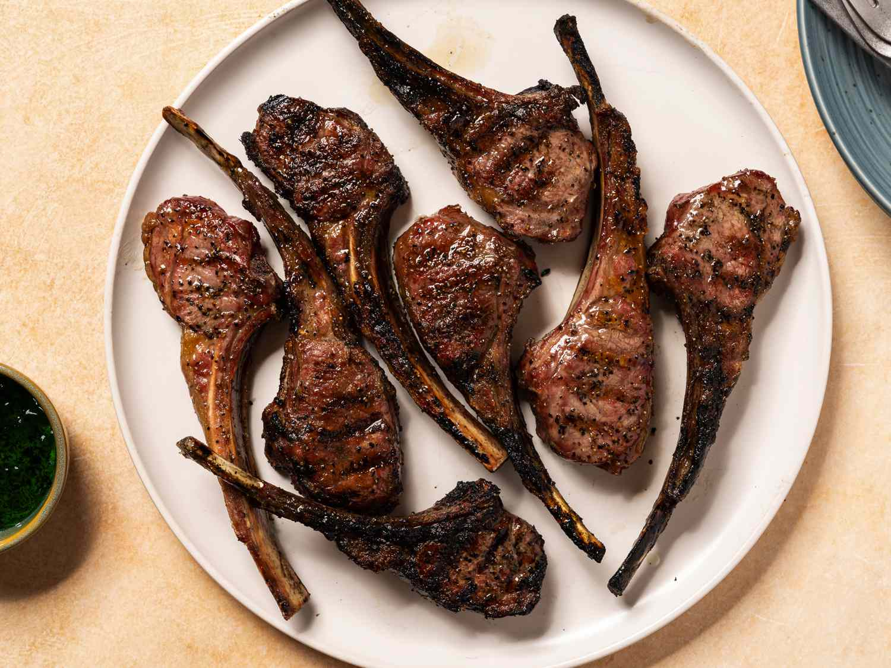

Goat Feet

Description
sum slight sum slight
Ingredients
1 onion, thinly sliced
¼ cup distilled white vinegar
2 tablespoons olive oil
1 tablespoon minced garlic
2 teaspoons salt
½ teaspoon black pepper
6 (6 ounce) lamb chops